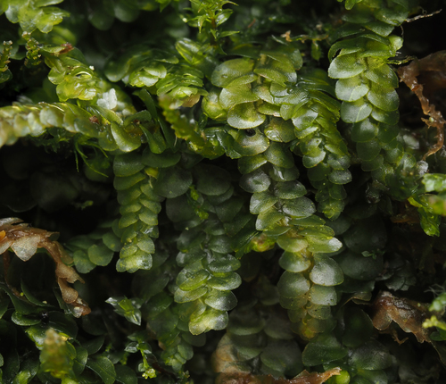

Calypogeiaceae
Pouchwort Family (common name for Calypogeia)
Calypogeiaceae is a family of leafy liverworts in the order Jungermanniales, characterized by incubously inserted leaves, prominent underleaves (often bilobed), and the development of a fleshy, subterranean perigynium protecting the sporophyte, instead of a perianth. The primary genus is Calypogeia.
Overview
The Calypogeiaceae family belongs to the vast order Jungermanniales, which encompasses the majority of leafy liverworts. This family is distinguished by several key features, most notably the incubous arrangement of its lateral leaves (where the upper margin of a leaf is covered by the lower margin of the leaf above it on the same side of the stem), the presence of large, conspicuous underleaves on the ventral side of the stem (often deeply bilobed), and the unique development of a perigynium. The perigynium is a fleshy, pouch-like structure derived from stem tissue that grows downwards, enclosing the archegonia and later the developing sporophyte, effectively replacing the function of the more common perianth found in many other leafy liverworts.
The main genus, Calypogeia, is widespread globally, particularly in temperate and boreal regions, with species commonly found on damp soil, peat, humus, decaying wood, and shaded rock faces. They often form pale green, bluish-green, or yellowish-green patches or mats. The family also includes the smaller genus Metacalypogeia. Their distinct morphology, especially the combination of incubous leaves, large underleaves, and the perigynium, makes them relatively easy to identify as a family.
Quick Facts
- Scientific Name: Calypogeiaceae Arnell
- Common Name: Pouchwort Family (for Calypogeia)
- Number of Genera: 2 (Calypogeia, Metacalypogeia)
- Number of Species: Approximately 40-50 in Calypogeia.
- Distribution: Cosmopolitan, but most diverse in temperate and boreal regions of the Northern Hemisphere. Found on moist soil, peat, humus, logs.
- Evolutionary Group: Bryophytes - Liverworts (Marchantiophyta) - Jungermanniopsida - Jungermanniales
Key Characteristics
Note: Calypogeiaceae are leafy liverworts (order Jungermanniales) with distinct vegetative and reproductive features.
Gametophyte (Leafy Shoot) Structure
The dominant phase is the leafy gametophyte:
- Form: Typically prostrate shoots forming mats or patches, often pale green, bluish-green, or yellowish.
- Stems: Relatively simple, with limited branching, often ventral-intercalary (arising from near the ventral side of the stem axis).
- Leaves: Arranged in two lateral rows.
- Shape: Typically simple, ovate, rounded, or oblong, usually unlobed with entire margins.
- Insertion: Distinctly incubous (the lower/posterior edge of each leaf overlaps the upper/anterior edge of the leaf below it on the same side of the stem). This results in the shoot appearing smooth when viewed from above.
- Cells: Often relatively large, thin-walled (collenchyma weak or absent), containing distinct oil bodies (number and appearance vary by species).
- Underleaves: Present as a third row on the ventral side of the stem.
- Size: Typically large and conspicuous, often as wide as or wider than the stem.
- Shape: Usually deeply bilobed (divided into two lobes), though sometimes undivided or shallowly notched in some species or forms. Shape and size are important for identification.
- Asexual Reproduction: Gemmae are commonly produced in many species, typically appearing as clusters of small, greenish, 1-2 celled structures at the tips of specialized, often upright shoots.
Reproductive Structures
Species can be monoicous or dioicous.
- Antheridia: Male organs are typically borne in the axils of modified leaves (bracts) on short, specialized ventral-intercalary branches (androecia).
- Archegonia: Female organs are borne terminally on very short ventral-intercalary branches. Crucially, they are enclosed within a perigynium – a fleshy, subterranean or surface-hugging pouch formed by the fusion of stem tissue and archegonial stalk tissue. This structure grows downwards into the substrate and lacks chlorophyll. There is no true perianth (structure derived from fused leaves surrounding the archegonia).
Sporophyte
The sporophyte develops within the perigynium:
- Foot: Embedded within the base of the perigynium.
- Seta: Distinct, elongating considerably at maturity, pale and translucent, pushing the capsule out of the perigynium and above the gametophyte mat.
- Capsule: Ovoid to cylindrical, typically brown when mature. The capsule wall is bistratose (two cell layers thick).
- Dehiscence: Capsule splits longitudinally into four straight or spirally twisting valves to release spores. The spiral twisting of valves is characteristic of many species.
Spores and Elaters
Contained within the capsule.
- Spores: Small, spherical, typically smooth or finely papillose.
- Elaters: Present, long and slender with 2 spiral thickenings, mixed among the spores, aiding in dispersal.
Field Identification
Identifying Calypogeiaceae involves recognizing the combination of leafy habit, incubous leaf insertion, large underleaves, and (if fertile) the characteristic perigynium.
Primary Identification Features
- Leafy Structure: Clearly differentiated stems, lateral leaves, and underleaves.
- Incubous Leaf Insertion: Lateral leaves overlap like downward-pointing shingles when viewed from the side. The shoot often appears smooth from above.
- Large Underleaves: Prominent leaves on the ventral side, typically deeply bilobed and often as wide as the stem.
- Perigynium (if fertile): Look for the fleshy, often pale, pouch-like structure (perigynium) at the base of the sporophyte seta, usually originating from a short ventral branch (may require careful dissection or observation). Absence of a typical tubular/inflated perianth around the sporophyte base.
- Habitat: Typically on moist, acidic substrates like peat, humus, soil banks, logs, or sandstone rocks.
Secondary Identification Features
- Leaf Shape: Lateral leaves usually simple, ovate to rounded, unlobed.
- Colour: Often pale green, bluish-green, or yellowish-green.
- Gemmae: Presence of greenish clusters of gemmae at shoot tips can be indicative.
- Cell Structure: Leaf cells often large and thin-walled (requires magnification).
- Spirally Twisting Valves: Dehisced capsules often show 4 valves that twist spirally (requires observation of mature sporophytes).
Seasonal Identification Tips
- Year-round: Vegetative features (leaves, underleaves) are usually present year-round in suitable habitats.
- Growing Season: Look for gemmae production. Sporophytes may mature seasonally, often in spring or summer depending on climate.
Common Confusion Points
Calypogeia might be confused with:
- Other Incubous Leafy Liverworts (e.g., Lepidoziaceae, some Cephaloziaceae): Some genera in these families also have incubous leaves. However, Lepidoziaceae often have deeply lobed leaves and/or underleaves, and Cephaloziaceae typically have smaller or absent underleaves and possess a true perianth (not a perigynium).
- Succubous Leafy Liverworts (e.g., Lophocoleaceae, Geocalycaceae, Plagiochilaceae): Easily distinguished by the opposite leaf insertion (succubous - like upward-pointing shingles).
- Simple Thalloids: Lack the differentiation into stem, leaves, and underleaves.
- Mosses: Mosses have leaves typically arranged spirally (not just 2+1 rows), often with a midrib (costa), and possess very different sporophyte structures (e.g., capsules often with peristome teeth).
Key differentiator: The combination of incubous leaves + large, usually bilobed underleaves + perigynium (instead of a perianth) is diagnostic for Calypogeiaceae.
Field Guide Quick Reference
Look For:
- Leafy shoots, often pale/bluish green
- Incubous leaf insertion
- Large, prominent, often bilobed underleaves
- Fleshy perigynium at sporophyte base (no perianth)
- Moist soil, peat, logs habitat
- Gemmae at shoot tips (common)
Key Distinctions:
- Leaf insertion incubous (not succubous)
- Underleaves large & prominent (unlike many Cephaloziaceae)
- Fertile structure is perigynium (not perianth)
- Clearly leafy (unlike simple thalloids)
- Lacks costa, different capsule (unlike mosses)
Notable Examples
The family is dominated by the genus Calypogeia.

Calypogeia fissa
(Common Pouchwort)
A very common and widespread species in temperate regions, often found on acidic soil banks, ditches, woodland floors, and peaty substrates. Characterized by its relatively broad, deeply bilobed underleaves with diverging lobes. Often produces gemmae.

Calypogeia muelleriana
(Mueller's Pouchwort)
Another common species, often overlapping in habitat with C. fissa but perhaps preferring slightly more mineral soils or humus. Distinguished by its underleaves which are typically broader than long, often rounded, and less deeply bilobed with lobes often parallel or converging.

Calypogeia azurea
(Blue Pouchwort)
Often found on rotting logs, peat, or acidic soil in shaded, humid locations. Known for sometimes having a distinct bluish-green tinge (though not always reliable). Distinguished by cell details (often larger cells) and underleaf shape (typically rounded, shallowly notched or bilobed).

Metacalypogeia species
(Metacalypogeia)
The other genus in the family, primarily found in East Asia and North America. Differs from Calypogeia in having underleaves that are typically undivided (entire) or only shallowly notched, and other more subtle features. Often found on soil or rocks.
Phylogeny and Classification
Calypogeiaceae is a well-defined family within the leafy liverwort order Jungermanniales. Molecular phylogenetic studies place it within the suborder Cephaloziineae (or sometimes Jungermanniineae depending on the classification framework). Its combination of incubous leaves, large underleaves, and the development of a perigynium represents a distinct evolutionary lineage within the leafy liverworts.
The evolution of the perigynium, a structure providing protection to the developing sporophyte by utilizing stem tissue rather than modified leaves (as in a perianth), is a key innovation of this family and related groups (like Trichocoleaceae). This suggests an alternative evolutionary pathway for sporophyte protection compared to the more common perianth found in many other Jungermanniales lineages.
Position in Plant Phylogeny
- Kingdom: Plantae
- Division: Marchantiophyta (Liverworts)
- Class: Jungermanniopsida
- Order: Jungermanniales
- Suborder: Cephaloziineae (or Jungermanniineae)
- Family: Calypogeiaceae
Evolutionary Significance
Calypogeiaceae is significant for understanding:
- Diversity in Leafy Liverworts: Showcases the combination of incubous leaves and large underleaves.
- Evolution of Sporophyte Protection: The development of the perigynium represents an alternative strategy to the perianth for protecting the archegonia and embryo.
- Asexual Reproduction Strategies: Widespread production of gemmae highlights the importance of asexual propagation in this group.
- Phylogenetic Relationships within Jungermanniales: Helps define relationships within the Cephaloziineae/Jungermanniineae suborders.